Bike2Bar app
Проблема
Приложение показывает все бары на велосипедном маршруте, по
которым можно проехаться. Исчезает необходимость в поиске ближайших
мест. Приложение автоматически их показывает.
Также оно может построить оптимальный маршрут по тем заведениям, по которым хочет проехаться пользователь.
Целевая аудитория
Любители бар-хоппинга, катающиеся на велосипеде с доходом выше среднего.
По большей части мужчины в возрасте до 30-35 лет.
Конкурентная среда
Конкурентами могут считаться сервисы-поисковики заведений в данном регионе (например “Афиша рестораны”, Foursquare). Также есть специализированное приложение по крафтовым барам Москвы - Craft beer и некое иностранное - pubrally про бар хоппинг.
Конкуренты в велосипедной части - Endomondo, и отечественное приложение Cycly, которое, видимо, уже не обновляется. Эти приложения являются лишь трекерами тренировок.
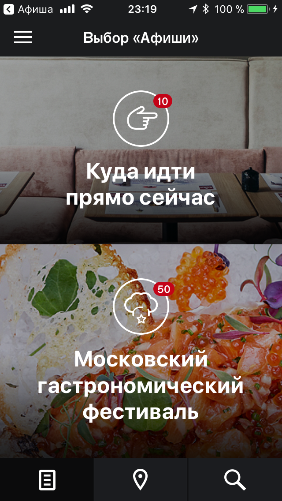
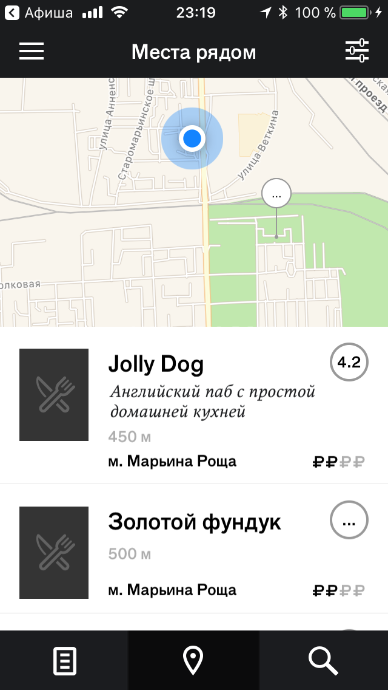
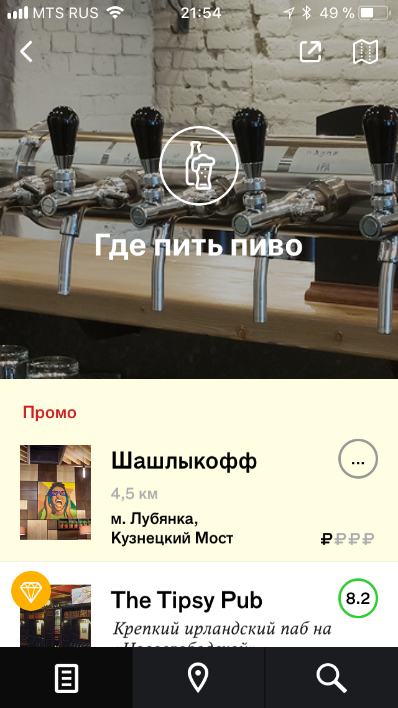
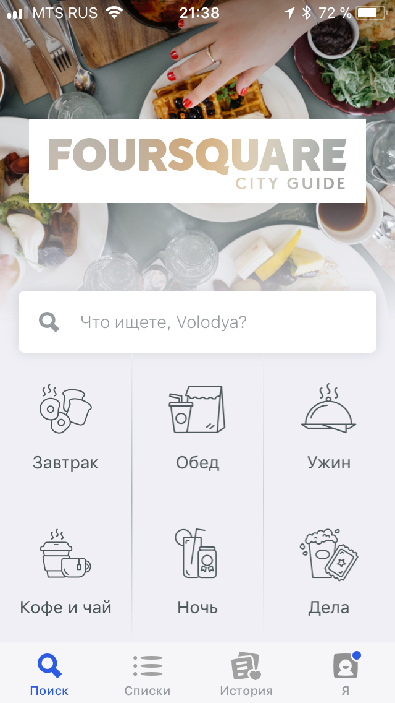
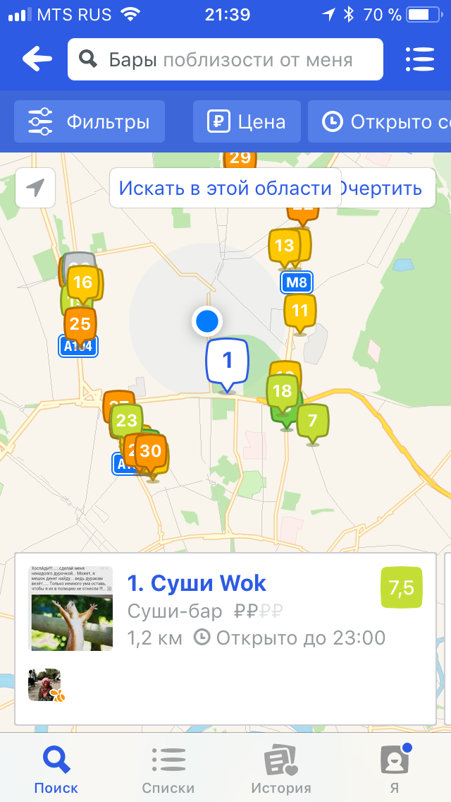
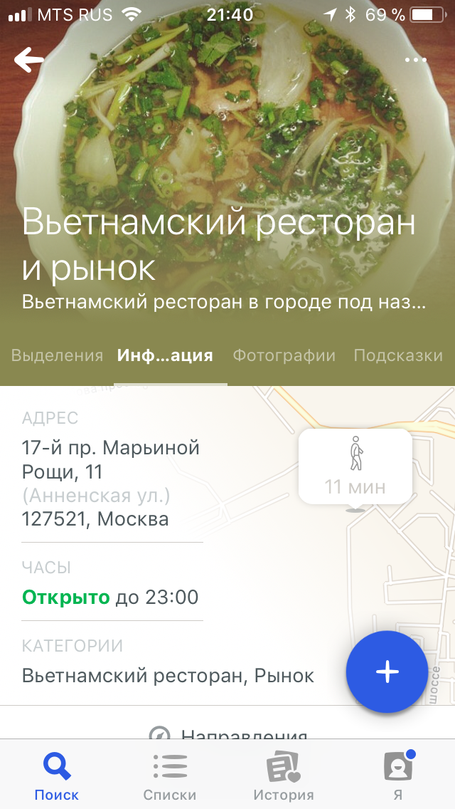
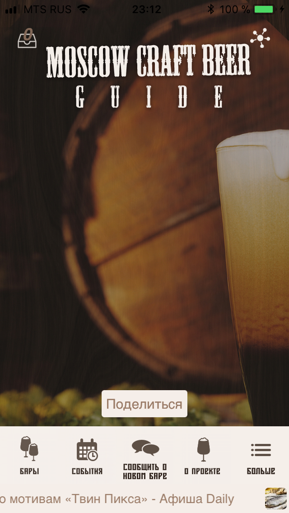
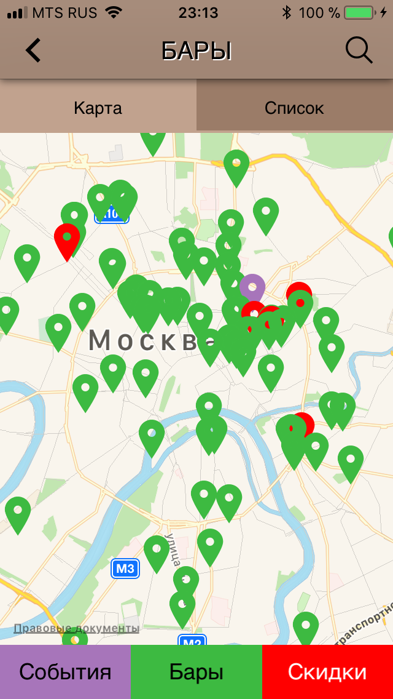
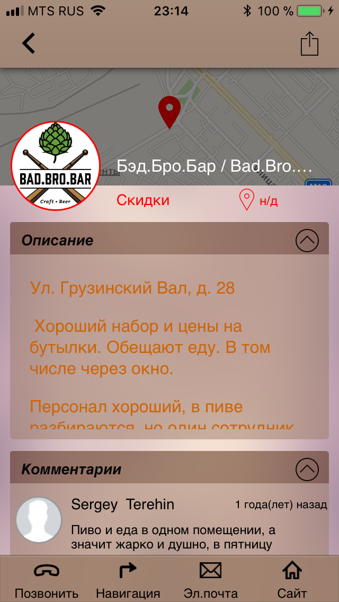
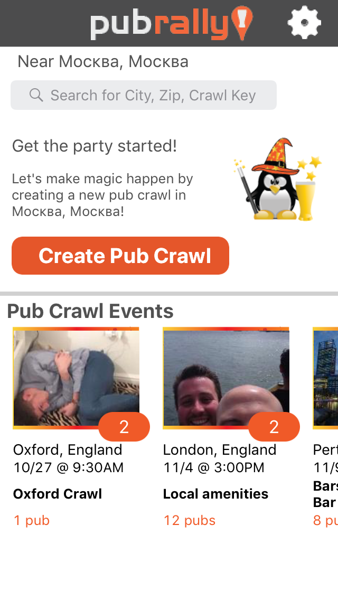
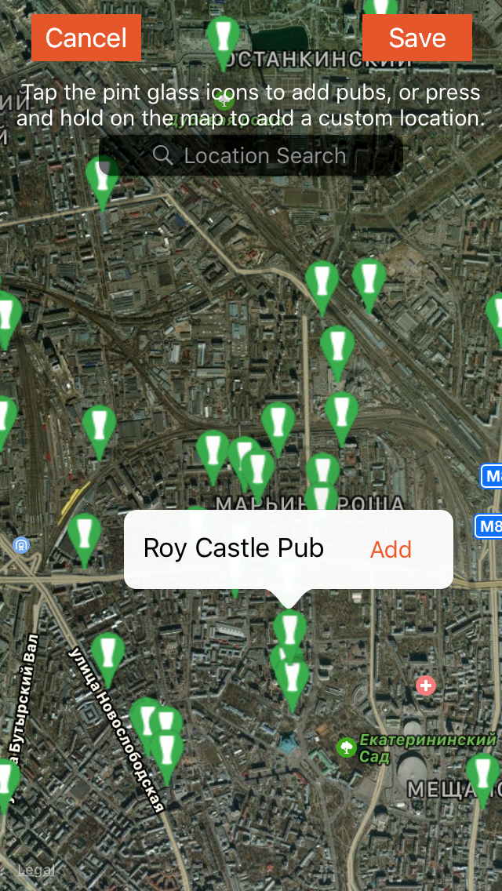
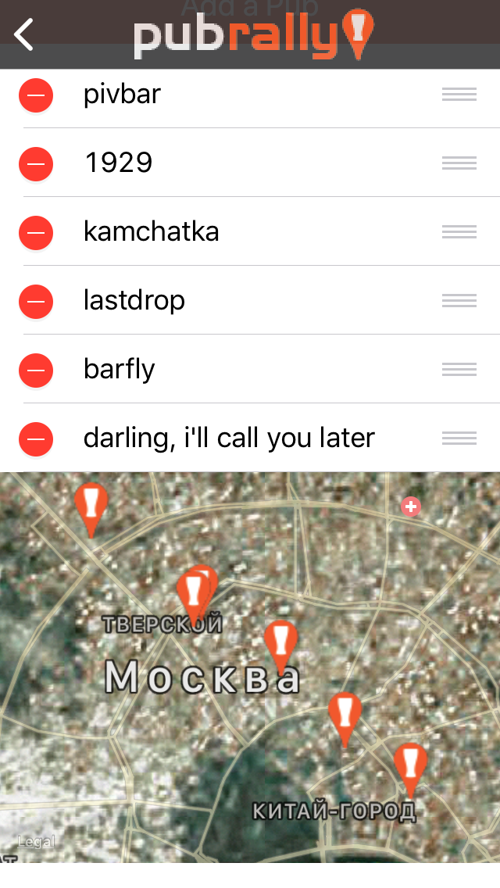
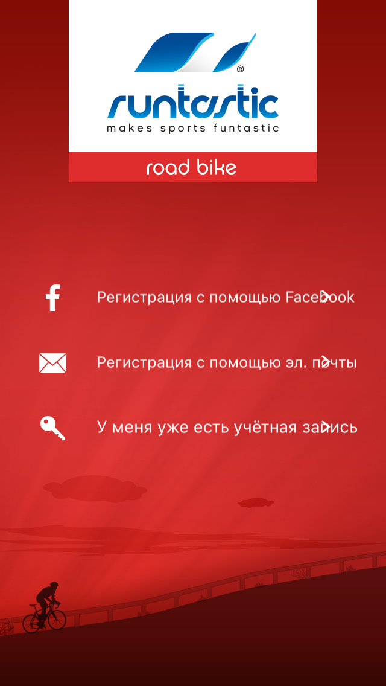
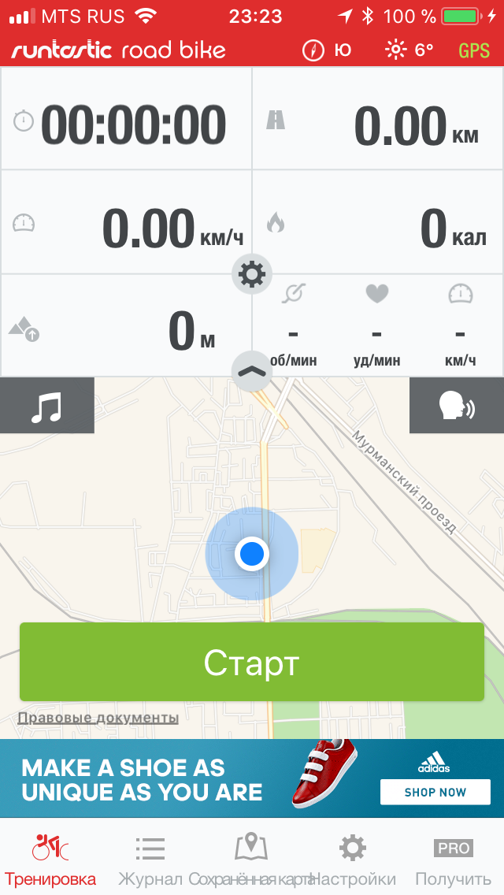
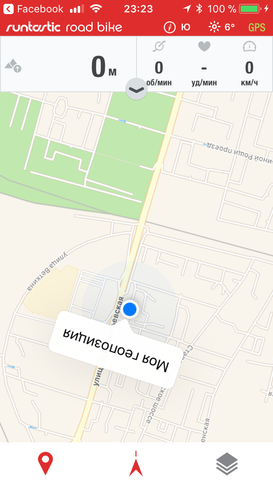
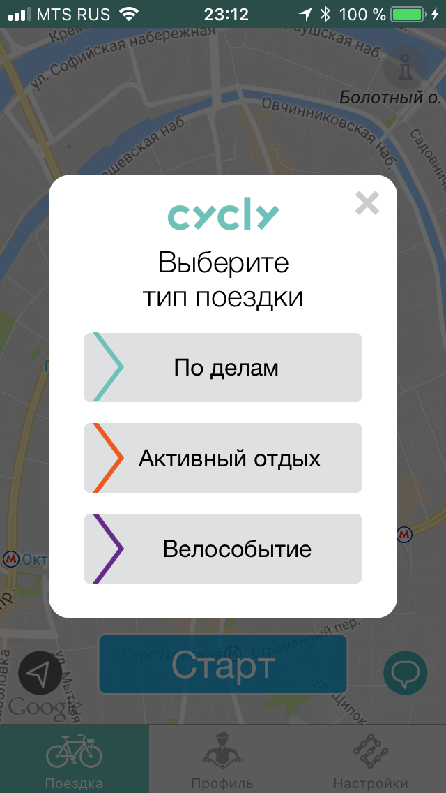
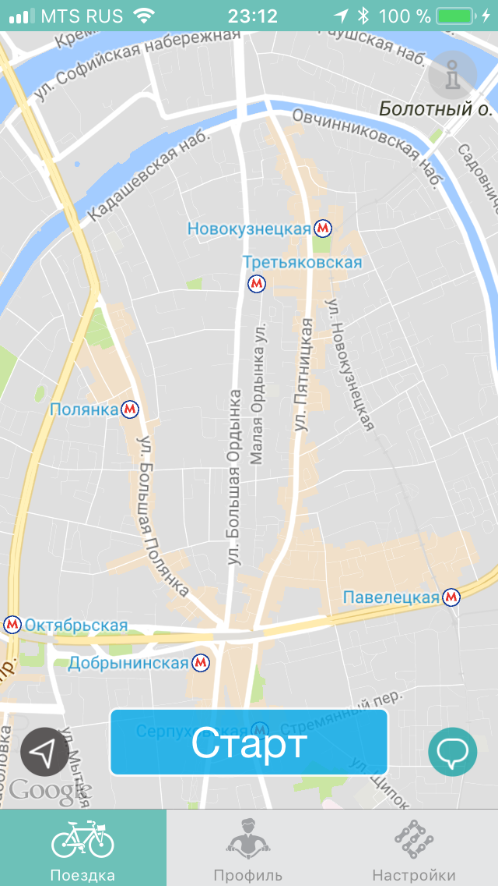
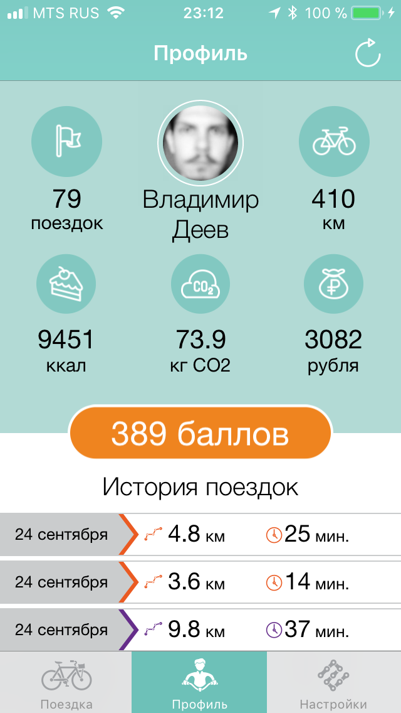
Решение
Проект представляет симбиоз лучших черт существующих приложений по поиску заведений и трекеру поездок на велосипеде по ним с элементами геймификации (в виде достижений на “тренировках”).
Пользователь может выбрать:
- маршрут из точки А в точку Б, на котором будут отображаться бары,
- выбор баров, через которые приложение построит самый удобный маршрут,
- готовый маршрут из списка ранее созданных (как самим пользователем, так и другими пользователями),
- или режим “просто покататься”, в котором по ходу движения будут всплывать указатели на ближайшие заведения.
Основные функции сервиса/действия пользователя в сервисе
- Регистрация нового пользователя
- Выбор маршрута:
- Пригласить друзей (в приложение, на мероприятие, прогулку)
- Принять запрос на приглашение
- Добавить в список новый бар/удалить из списка закрывшийся бар
- Оставить отзыв (о заведении/маршруте)
- Посмотреть свою статистику (количество посещенных мест, пройденных маршрутов/километров, созданных маршрутов и т.д.), поделиться ею в соц. сетях
- Оставить сообщение на карте (как в Яндекс картах) или в виде стикеров
- Чек-ины в в барах
- Выбор, редактирование типов баров, которые пользователь хочет посетить (будут показаны на карте)
- Редактирование профиля пользователя
- Восстановление учетной записи
- Шеринг информации о приложении/достижениях в соц. сетях.
Способы продвижения сервиса
- Landing page,
- SMM (посты в соответствующих пабликах/группах),
- Листовки в барах с информацией о приложении,
- Шеринг пользователями информации о приложении в соц. сетях,
- Промо маршруты по барам для всех желающих бесплатно.
Возможные способы монетизации сервиса
- Промо баров, которые хотят быть в ТОП,
- Партнерские программы (скидки пользователям в барах, % от которых идет приложению),
- Платные дополнительные функции.
Возможные ошибки/проблемы, возникающие при пользовании сервисом и способы их решения/взаимодействия с пользователем при их появлении
- Ошибки при регистрации,
- проблемы с геолокацией/записью маршрута и отметками в барах,
- устаревшая информация о баре в приложении,
- проблемы с созданием нового маршрута.
Риски
- Сезонность (в холодное время на велосипедах мало, кто ездит), но тогда это приложение можно использовать и пешком.
- Проблемы с ПДД и безопасностью дорожного движения у “Активных” посетителей баров могут привести к испорченной репутации приложения и недовольству общественности.